白话DDD入门
白话DDD入门
一个维护中的业务系统引出的思考
这几年维护的一个带货类的项目，这个项目用了最传统的三层模型来搭建，大概是如下的模型：
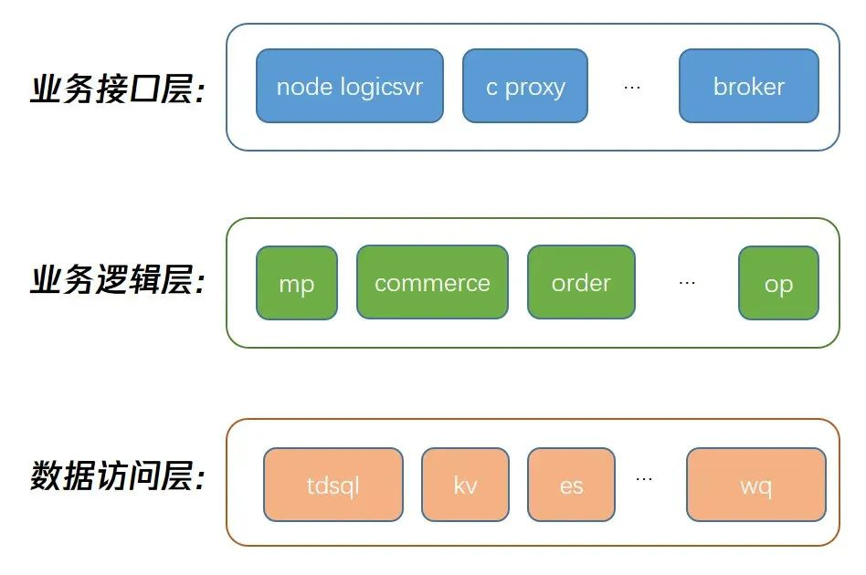当这个项目维护几年之后，逐渐出些了一些有意思的情况，如下：
情况 1（代码层面）：少部分代码可读性在长期不同人员的修改下变得越来越差。如：某个带货的核心 rpc 逻辑没有任何嵌套，平铺在一个函数里，单函数代码行数达到几百行，可读性和维护性极差，成功化身为“技术护城河”。
情况 2（微服务层面）： 某些微服务初始职能划分较为简单，导致少量模块在后续快速的迭代中迅速膨胀。如：其中的 mp 模块，原本职能是用来承接 B 端门户的功能，当我们决定拆分这个庞大的模块时，这个模块已经承载了 204 个 rpc。过多的能力承担让它编译变慢、变成链路单点、改动较多、一旦出现问题影响较大。
情况 3（业务团队层面）：带货项目会使用一些其他业务系统的接口和数据结构，当这些业务系统想要修改这些接口和数据结构的时候 ，偶尔可能没有察觉这里的依赖导致线上问题， 或者沟通过来发现耦合处比较多不容易改动。
对这个项目的维护引出了一些思考，在一个复杂业务系统中：代码结构要如何设计、微服务的横/纵向职能要如何划分、业务团队之间如何交互，才能持续在长期快速、多人协作的迭代中保证系统可维护性、拓展性、高内聚低耦合和稳定性。
而传统的开发模式不管是面向过程（POP）还是面向对象（OOP）的思维，都没办法从微服务层面指导我们找到这些问题的答案。这时想到了领域驱动设计（DDD）。
DDD 的分层架构
DDD 最有标志性的一点，就是将传统软件设计三层模型转化为了四层模型，这个转化如下图所示：
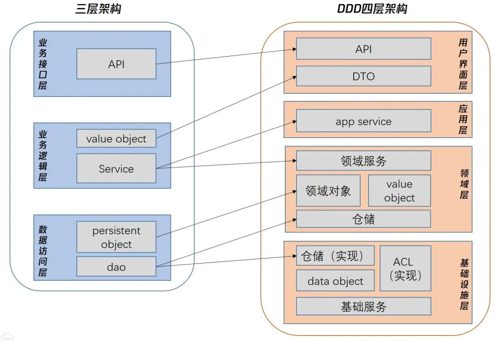乍看之下，四层架构引入了很多概念，如：领域服务、领域对象、 DTO、仓储等等。我们先不用在意这些细节概念，先关注这几个关键的层：用户界面层、应用层、领域层、基础设施层。我们来看下他们的职能分工：
- 用户界面层：网络协议的转化/统一鉴权/Session 管理/限流配置/前置缓存/异常转换
- 应用层：业务流程编排（仅编排，不能存在业务逻辑）/ DTO 出入转化
- 领域层：领域模型/领域服务/仓储和防腐层的接口定义
- 基础设施层：仓储和防腐层接口实现/存储等基础层能力
这里必须要说的是，这四层不一定是指物理四层，也可以在一个微服务中拆分逻辑四层。四层架构有很多变种，如六边形架构、洋葱架构、整洁架构、清晰架构等等。这些繁多的概念我们这里不过多讨论，仅以洋葱架构为例，着重强调 DDD 中的依赖倒置（DIP），以便后面更容易介绍仓储/防腐层等概念。
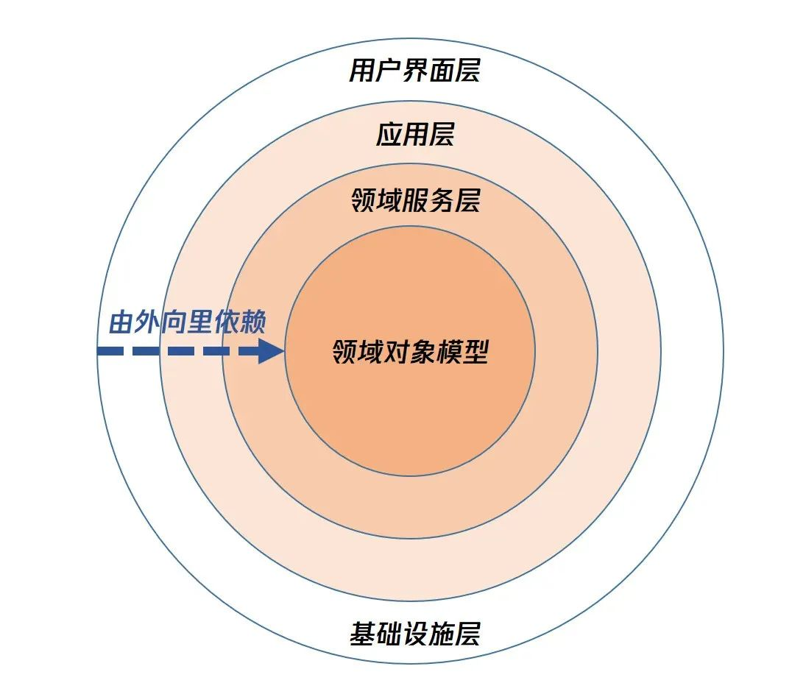依赖倒置(DIP)：
1.高级模块不应依赖于低级模块。两者都应依赖抽象。
2.抽象不应依赖细节。细节应依赖于抽象。
如上，洋葱架构越往里依赖越低，越是核心能力。基础设施层在最外面，依赖其他层，这是是因为 DDD 中其他层等需要定义自己需要的基础能力接口，而基础设施层负责依赖并实现这些接口，从而实现整体依赖倒置。这体现了 DDD 的由全局入细微、自顶层向下层的设计思维。
3.DDD 的概念和实践
1）战略和战术
DDD 的落地过程，其实就是战略建模和战术建模。
战略建模，是指：通过 DDD 的理论，对业务需求进行拆解分析，划分子域，梳理限界上下文，通过领域语言从战略层面进行领域划分以及构建领域模型。并且在在构建领域模型的过程中梳理出业务对应的聚合、实体、以及值对象。
战术建模，是指：以领域模型基础，通过限界上下文作为服务划分的边界进行微服务拆分，在每个微服务中进行领域分层，实现领域服务，从而实现领域模型对于代码映射目的，最终实现 DDD 的落地实施。
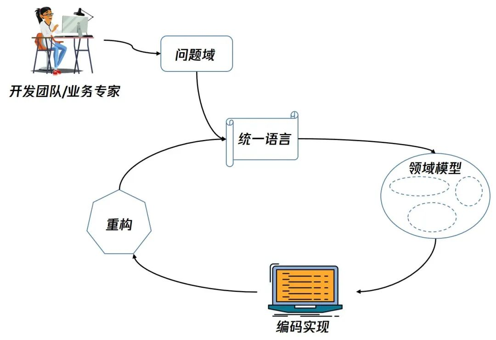当然，战略和战术的建模除了要考虑业务形态，还要考虑到组织架构，就如同康威定律中的表达，沟通架构会影响技术架构。
康威定律：任何组织在设计一套系统（广义概念上的系统）时，所交付的设计方案在结构上都与该组织的沟通结构保持一致。
2）领域
DDD 在解决复杂的问题的时候，使用的是分而治之的思想。而这个分而治之的思想，就是从领域开始，一个领域就是一个问题空间，而我们在拆分这个问题空间的时候，也就是在划分子领域和寻找它的解系统的过程。
实践例子：
如我们某个新的增值业务，就是看成是的大的增值业务域，接下来我们通过 DDD 来指导拆分它。
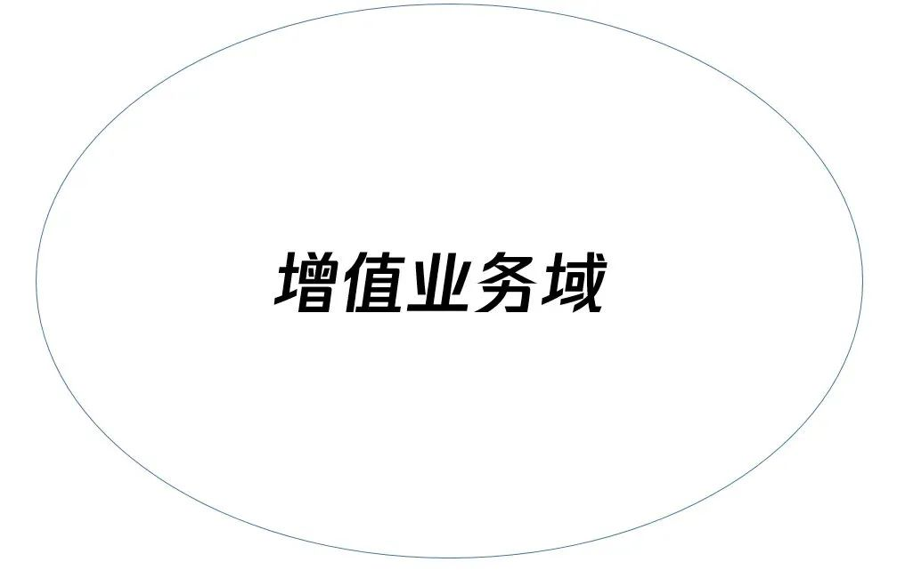3）子域
如果一个领域太大太复杂，涉及到的业务规则、交互流程、领域概念太多，就不能直接针对这个大的领域进行建模。这时就需要将领域进行拆分，本质上就是把大问题拆分为小问题，把一个大的领域划分为了多个小的领域（子域）。
子域可以分为三类：
核心子域：业务成功的核心竞争力。
通用子域：不是核心，但被整个业务系统所使用 。
支撑子域：不是核心，不被整个系统使用，完成业务的必要能力。
子域的划分除了分治了大的问题空间，也划定了工作的优先级。我们应该给予核心域最高的优先级和最大的资源。在实施 DDD 的过程中，我们也是主要关注于核心域。
实践例子：
子域的划分，需要比较强的业务知识和产品研发集体讨论，准确和深入的业务见解在这一阶段尤为重要。这里我们不对业务知识深入讨论，仅展示下我们的对增值业务域的拆解结果。
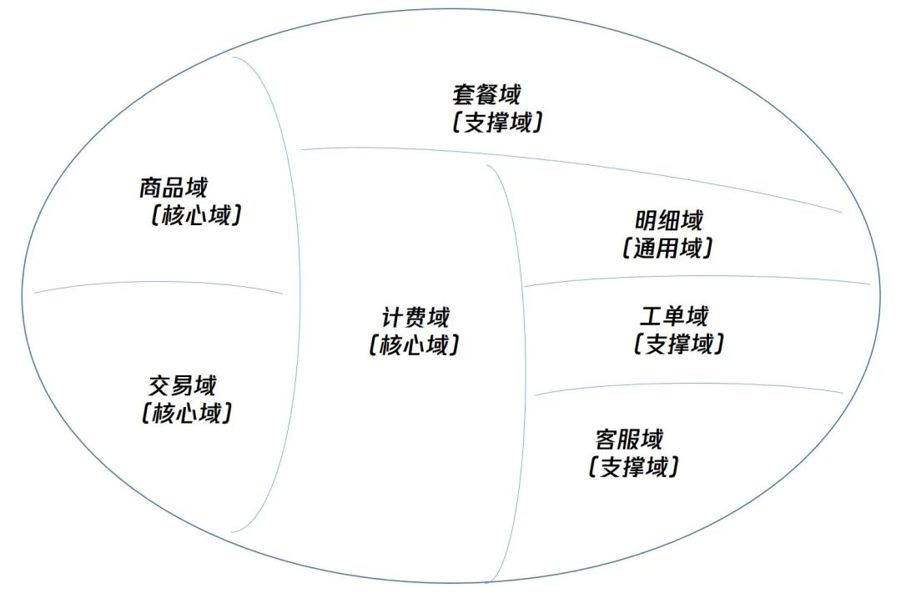这里要说的是，套餐域在实现的过程中由于产品需求变化概念被废弃了，但是由于我们的子域拆分，套餐域和其他域实现上没有任何耦合，所以废弃套餐域概念的废弃就像拆掉一个积木一样，对整套系统没有任何影响，也不会遗留任何不必要的包袱代码。
4）限界上下文
要理解限界上下文，首先要先介绍通用语言。通用语言是 DDD 非常重要的一点。比如商品这个概念，在商品域里是指备上架的商品， 包含了 id、介绍、文档等。在交易域里其实是指订单中被交易的实体，关注的是 id、成交时刻的售价等参数、成交数量。而如果不能明确这些概念和他们的关系就会让开发人员的实现变的随心所欲和模糊。
而限界上下文是就是划分一个边界，当领域模型被一个显示的边界所包围时，其中每个概念的含义应该是明确且有唯一的含义。
我觉得初学者最常碰到的问题，肯定”明明已经有子域了，为什么还会有限界上下文这个概念”。子域是一个子问题空间，而限界上下文的作用是指导如何设计这个问题空间的解系统。换句话说，限界上下文才是真正用来指导微服务划分。一般来说一个子域对应一个或多个限界上下文。
划分限界上下文可以参考如下的规则：1） 概念是否有歧义：如果一个模型在一个上下文里面有歧义，就说明可以继续拆分限界上下文。
2）外部系统：可以把与外部系统交互的那部分拆分出去降低外部系统对我们我们的核心业务逻辑的影响。
3）组织架构：不同团队最好在不同的限界上下文里面开发，避免沟通不顺畅、集成困难等问题。可以参考上述”康威定律“。
实践例子 1：
如上所述，商品这个概念，是需要用限界上下文在不同场景区分开的。当然这也会导致两个限界上下文之间会有依赖。通过 DDD 的概念可以指导我们进行如下实现。
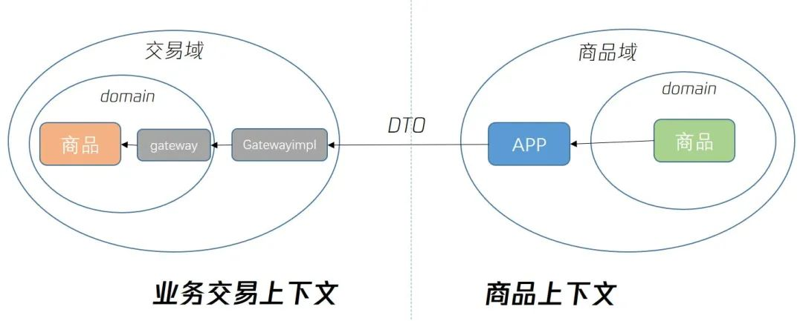其中 gateway/gatewayimpl 是防腐层的实现，DTO 是指数据传输对象，APP 是指商品应用层。两个不同颜色的商品是指两个上下文中分别进行定义的不同的实体或值对象。
实践例子 2：
交易域中，有两个订单的概念，其中第一个订单的概念是指业务层订单， 第二个订单的概念是指内部基础层订单。业务订单更关注发生交易的成交商品信息，这个订单是用户需要的。基础层订单更关注交易底层的过程信息，这个订单更多是我们内部人员需要的，用户不理解。
当时有个思路是想让基础层团队的同学额外开发直接支持基础层订单存储业务信息，这明显是不符合 DDD 限界上下文划分规则 1）和 3）的，是需要通过限界上下文解耦开的。所以我们在交易域中拆分两个上下文，后续从微服务层面也是相互独立的微服务，各自管理各自的领域实体和值对象。
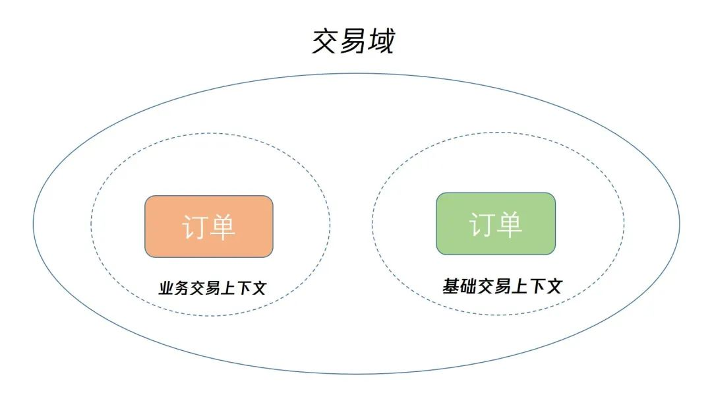5）防腐层
当两个限界上下文相互调用的时候，需使用防腐层（ACL）来进行两个限界上下文的隔离，并实现 value object 的转换。避免不同上下文直接互相调用，不然一旦被调用上下文被修改则可能产生较大影响。
实践例子：
实现链路可以参考 3.4 的例子 1，在商品域中，我们的防腐层是按照如下的目录方式实现的， 领域层来定义领域层需要的防腐接口，基础设施层继承并实现防腐接口，在基础设施层直接调用其他限界上下文。
1 | productdomainsvr（商品限界上下文） |
6）领域事件
两个限界上下文除了通过使用防腐层直接调用，更多的时候是通过领域事件来进行解耦。
并不是所有领域中发生的事情都需要被建模为领域事件，我们只关注有业务价值的事情。领域事件是领域专家所关心的（需要跟踪的、希望被通知的、会引起其他模型对象改变状态的）发生在领域中的一些事情。
其实，领域事件的本质就是事件，我们常见的 kafka、wq 等都可以作为领域事件的实现基建。通过领域事件，可以把很轻松两个限界上下文解耦
实践例子：
在我们的增值业务中，交易域的”支付成功”就是一个领域事件，计费域订阅这个领域事件，从而可以根据这个事件调整客户的计费资源包实体。
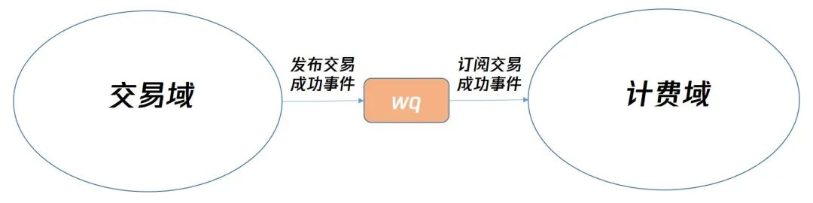可以想象，如果这里没有采用领域事件， 而是交易域直接调用计费域的 rpc 通知交易成功，那么当后续有其他域需要接受“支付成功”这个事件，或者，计费域被调用的接口出现故障。都会让交易域陷入麻烦，前者需要交易域不停的堆叠调用外部 rpc 的代码并让系统变得不稳定，后者则直接会让计费域的故障影响到用户交易。
7）实体/值对象
实体是指上下文中唯一的且可持续变化的基础单元，在其生命周期中可以通过稳定的唯一 id 来标识。实体在我们代码中以领域对象的形态存在，同时具备属性和方法，实体是 DDD 用来实现充血编程、解决贫血症的关键。
与实体相对应的就是值对象，如果没有唯一标识就是值对象。值对象一般是嵌套在实体里面的。
实践例子：
商品域中的实体和值对象如下
| 实体 | 描述 | 关键值对象 |
|---|---|---|
| SPU | 指一个被上架的服务。 | spu_id, spu_type，状态等。 |
| SKU | 指一个服务具体的单项套餐。 | sku_id, 规格，价格等。 |
| 折扣 | 自定义折扣。 | 折扣 id，折扣类型，折扣比例等。 |
8）聚合/聚合根
把关系紧密的实体放到一个聚合中，每个聚合中有一个实体作为聚合根，所有对于聚合内对象的访问都通过聚合根来进行，外部对象只能持有对聚合根的引用。每个聚合都可以有一个独立的上下文边界。
聚合应划分的尽量小，一个聚合只包含一个聚合根实体和密不可分的实体，实体中只包含最小数量的属性。设计这样的小聚合有助于进行后续微服务的拆分。
如果一个 rpc 所实现的功能是跨聚合的，那跨聚合的编排协调工作应该放在应用层来实现。
实践例子：
我们可以在 6)中的例子划分如下的聚合。
| 聚合 | 实体 | 是否是根 |
|---|---|---|
| 聚合 1 | 服务 SPU | 是 |
| 服务 SKU | 否 | |
| 聚合 2 | 折扣 | 是 |
在底层存储落表上， spu 实体/折扣实体作为表的一行， 而 sku 实体在这种聚合建模的指引下我们设计成 spu 聚合根的一列。
在微服务拆分上，如果想拆到最细粒度， 可以把两个聚合按照各自上下文拆成独立的微服务。当然这种落地实现并不是 DDD 强行要求的，我认为一些时候我们也可以从开发维护效率的角度考虑， 将一些有关联的小上下文放在一个为微服务上。我们在处理商品域上选择了后者。
9）DTO/领域对象/Data object
当一个请求进入 DDD 所设计的系统中，这个请求的形态会根据所在的层级发生如下变换，DTO<->领域对象<->Data object。
DTO 是指对外传输的其他服务需要理解的结构，领域对象是指同时包含了属性和方法的领域实体封装，Data object 则是真正用于最终存储的数据结构。
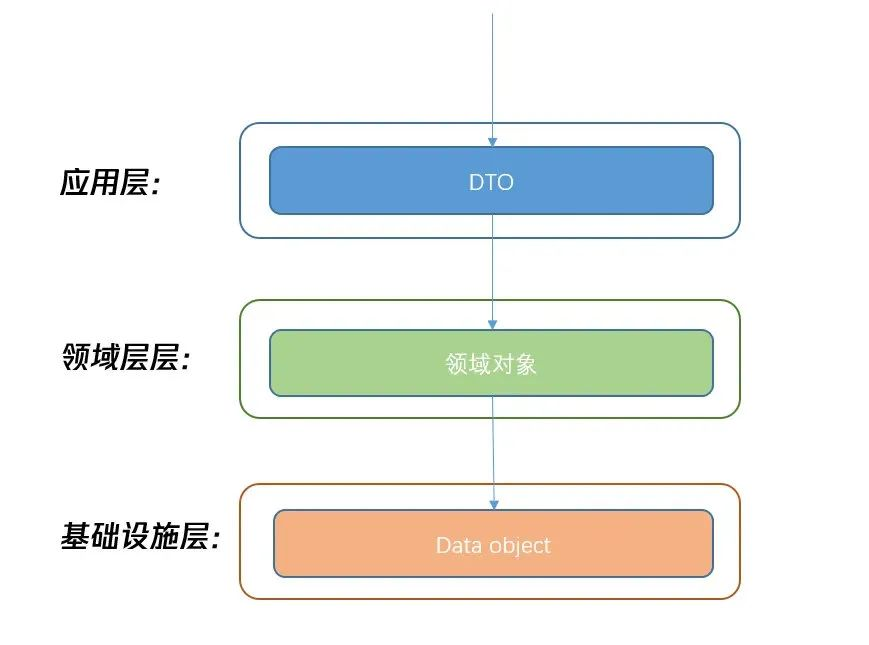这里其实很容易发现，DTO 的存在虽然符合其他调用方最少知识原则（LKP），但如果连最简单的查询请求都需要做这三级的转换，那无疑是会加重开发的复杂度，变成为了设计模式而设计模式。
最少知识原则(迪米特法则，LKP):一个软件实体应当尽可能少地与其他实体发生相互作用。这里的软件实体是一个广义的概念，不仅包括对象，还包括系统、类、模块、函数、变量等。
所以 DDD 在这里一般会使用 CQRS（读写责任分离）架构，来保证一些简单的查询请求不会因为领域建模而变得过于复杂。CQRS（读写责任分离）基于 CQS（读写分离），使用了 CQRS 的 DDD 对象转换流程如下：
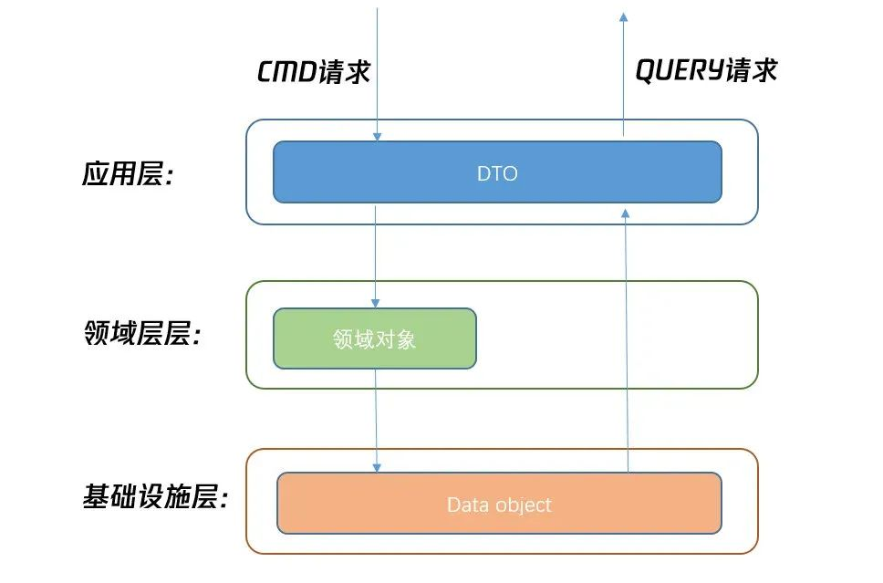实践例子：
我们的实现是在领域对象中封装了转换的 convert 函数（当然也可以在基础设施层将 convert 方法拆分出来做单独的封装），用于将 DTO 转换为领域对象，或者将领域对象转换为 DO。下面是我们明细域的实际转换代码和转换过程。
1 | //1.领域对象中定义convert方法 |
10）仓储
仓储是领域层由定义接口，它抽象了业务逻辑中对实体的访问（包括读取和存储）的技术细节。它的作用就是通过隔离具体的存储层技术实现来保证业务逻辑的稳定性。注意，仓储只是接口的定义是在领域层，但是它的实现是在基础设施层。
仓储不是数据库 Dao！！！
仓储不是数据库 Dao！！！
仓储不是数据库 Dao！！！
重要的事情说三遍，仓储是从业务逻辑的角度抽象出来的接口，所以仓储的接口在实现上，一般是一个聚合对应一个仓储实现，仓储的需要用领域对象做参数。仓储接口的命名也可以取 save 这种更业务的命名， 而避免传统 dao 的 insert/set 等这种明明。
实践例子：
通过 3.9 的例子，我们可以发现，仓储用于持久化的接口里，不但包含了写 kv 的操作，还包含了发布领域事件等操作，这就是因为仓储是从业务逻辑角度抽象出来的接口，领域层只需要理解 save 这个业务操作，而不应该理解 save 的过程包含了落存储、发布领域事件等具体流程。
1 | //1.领域层定义DetailRecord仓储的接口 |
11）领域服务
当一些能力不适合放在某个领域对象中实现，又因为过于复杂不应该放在应用层来实现。可以把这些操作封装成领域服务的中方法，由应用层编排领域层的领域对象和领域服务方法来完成具体的业务功能。
4.DDD 的代码脚手架
我们基于对 DDD 的理解和 WXG 的 svrkit 框架，设定我们的代码脚手架。脚手架的目录如下所示，希望可以给想一起实践的同事抛砖引玉，也欢迎大家来找我们一起讨论：
1 | 项目目录 |
参考文档：
 微信
微信